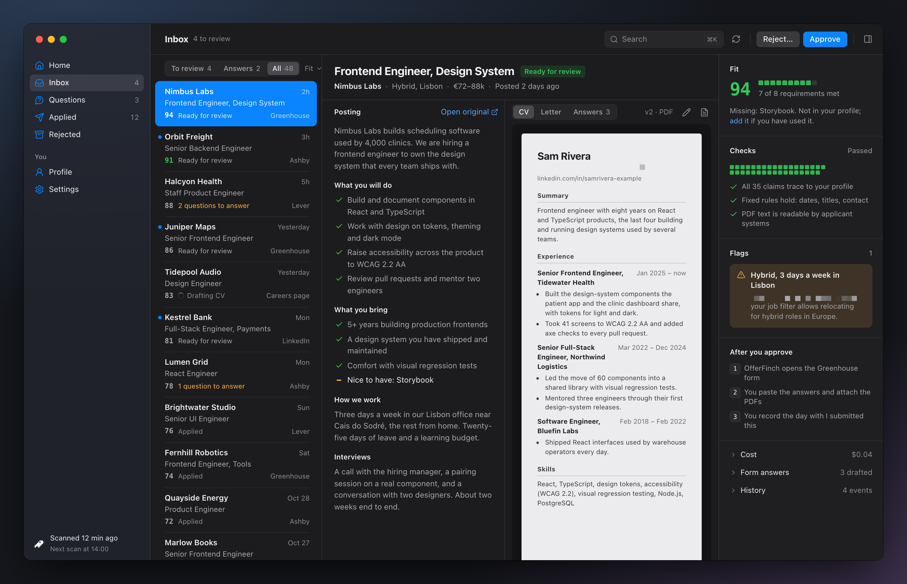
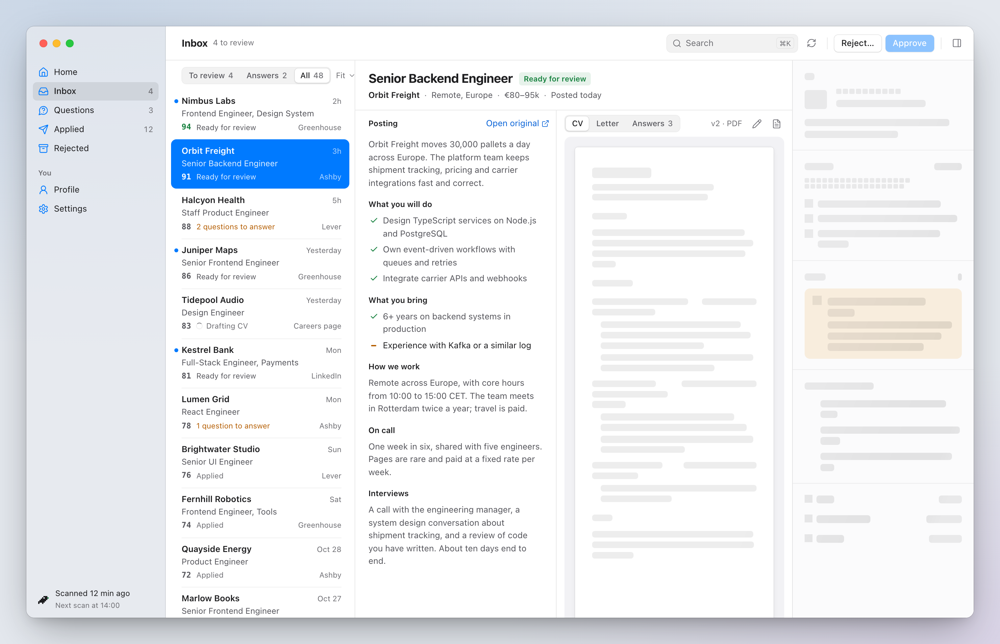
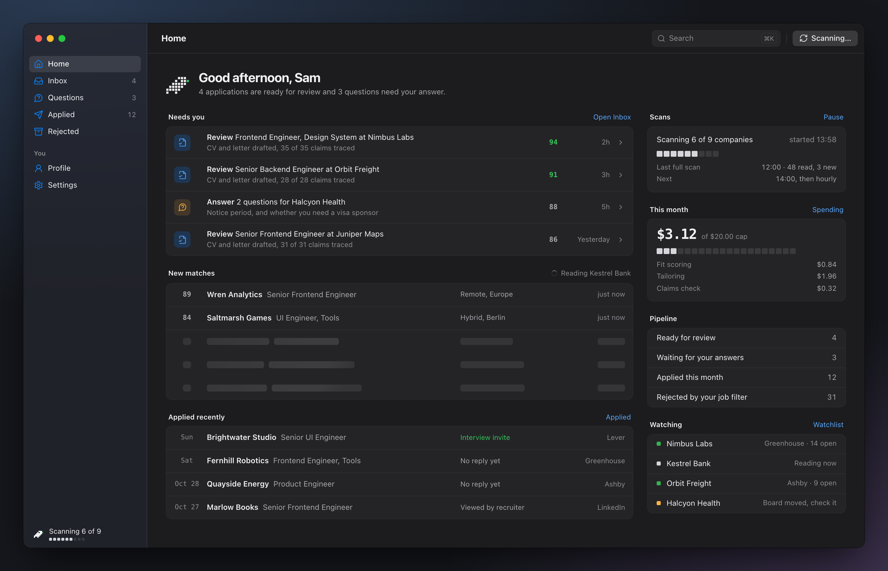
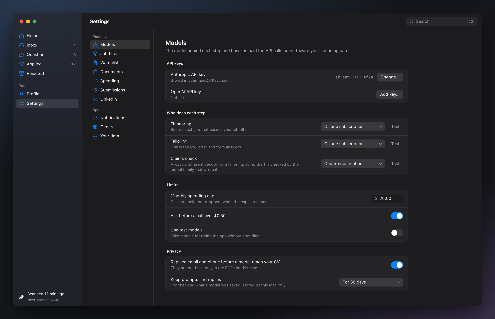

OfferFinch Native
One macOS direction: hidden title bar with the lights in a translucent sidebar, three-pane Inbox, SF Pro at 12–13 px, system light and dark, the Grid mark's cells as meters.





One macOS direction: hidden title bar with the lights in a translucent sidebar, three-pane Inbox, SF Pro at 12–13 px, system light and dark, the Grid mark's cells as meters.



